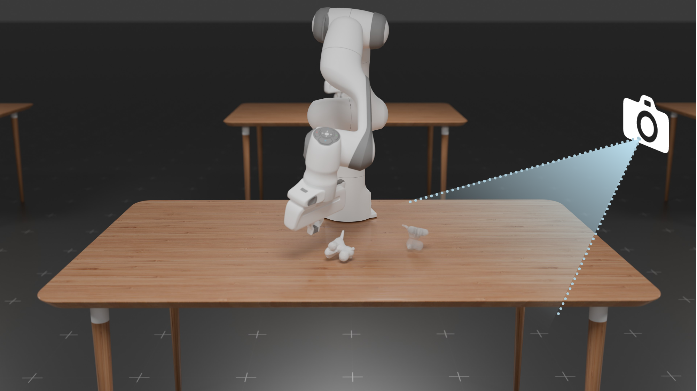
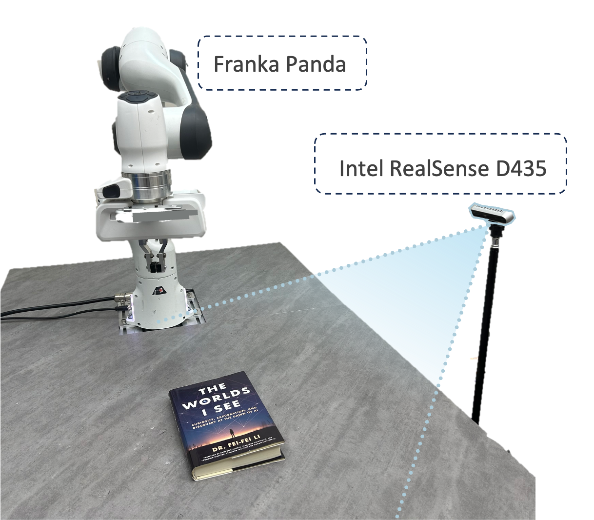
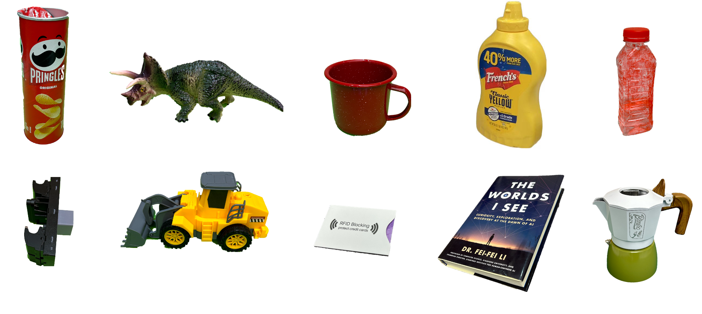
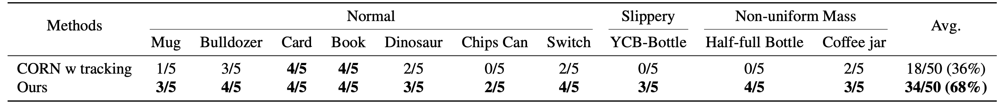
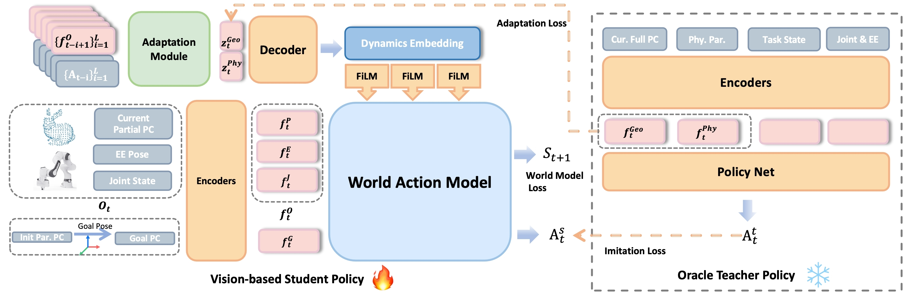

Experiments
Simulation and Real-World Setups



We argue that a generalizable non-prehensile manipulation policy in a realistic robotic setting should not only accommodate diverse object
geometries but also adapt to varying physical properties, all while relying solely on a single-camera setup without the need for additional tracking modules.
Left: Simulation Setups. Right: Real-World Setups and 10 unseen objects for evaluation.
Simulation Rollouts
Generalize across Diverse Gemotries
Generalize across Different Table Frictions
Handling Objects with Non-uniform Mass Distribution
Combining with VLM and Grasping
Quantitative Results in the Real World

We evaluate our model's generalization ability by comparing it with CORN, which relies on an external tracking module for object pose estimation in real-world experiments. Our method achieves accurate manipulation across diverse objects without external pose tracking, significantly outperforming CORN with an average success rate of 68% versus 36%.
DyWA Methods

Our World Action Model processes the embeddings of the current observation (partial point cloud, end-effector pose, and joint state) and the goal point cloud (transformed from the initial partial observation) to predict the robot action and next state. Additionally, an adaptation module encodes historical observations and actions, decoding them into the dynamics embedding that conditions the model via FiLM. A pre-trained RL teacher policy (right) supervises both the action and adaptation embedding using privileged full point cloud and physics parameter embeddings.
Acknowledgments
We would like to give special thanks to Jiayi Chen for fruitfull discussion.
BibTeX
@article{xue2025demogen,
title={DemoGen: Synthetic Demonstration Generation for Data-Efficient Visuomotor Policy Learning},
author={Xue, Zhengrong and Deng, Shuying and Chen, Zhenyang and Wang, Yixuan and Yuan, Zhecheng and Xu, Huazhe},
journal={arXiv preprint arXiv:2502.16932},
year={2025}
}